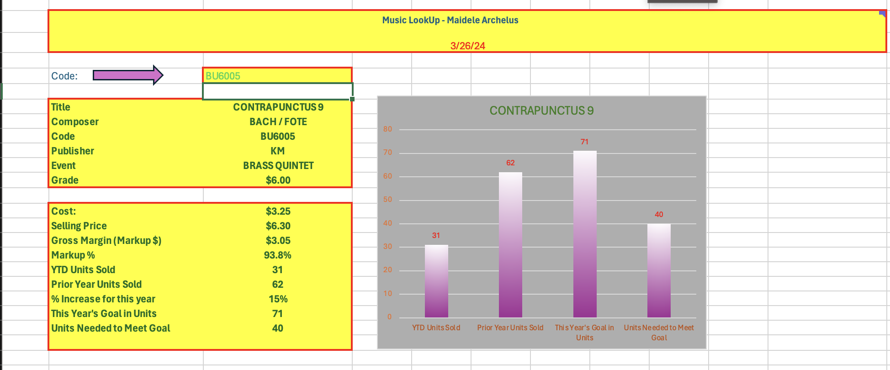
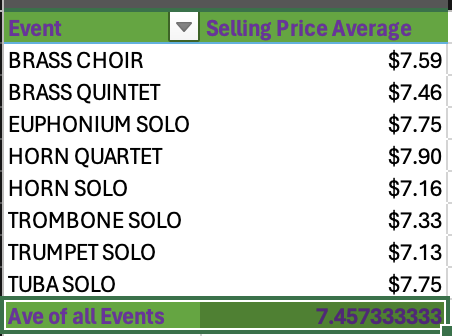

This project's goal is to utilized a Music lookup functions to display different skills and functions in excel. This project had a total of five parts with multiple steps in each part. The first part was regarding creating the workbook. This step included inserting the "Music Data" datasheet into Excel." This part of the assignment including wrapping the titles of "Prior Year Units Sold" along with "YTD Units Sold" in one cell. This part also includes sorting the data and including conditional formatting in the color green. The conditional formatting highlights the prices that are $9 or higher.
Part 2 of this project is about putting together the 1st worksheet. This part involves setting up the title and the input area. The Title section included an area for my name, current data formula, background colors, borders, and a note. The title is merged and place in the center across the data columns. The input area is a place that allows placement to enter a music code. It includes an arrow, the "SHAPE" feature, background colors and borders. This part of the project includes information for the music lookup, calculations, and graph. The step regarding music lookup allows users to search the worksheet using whatever code they entered in the worksheet. The calculations step are calculations that are used to display the Markup%, units needed to meet the goal, and other components of the Music Lookup. The graph represents the information in the Music Lookup through a column chart.
Part 3 of this project includes the Pivot worksheets. The first pivot chart displays the selling price average and the event named. The second pivot chart displays the amount that was sold in units between the two years. The third pivot chart was one that I made individually to display some analytics that were interesting. The third pivot table displays the publisher count and selling price of the grade levels. Part 4 of this project is regarding filters. Filter 1 shows the publishers that have a "K" in their codes along with events that include the word "Brass" in their name. Filter 2 represents grade 3 or more for Tuba music. Filter 3 was the one that I made on my own and it represents horn players that have a selling price that is more than 5. The final part of the project includes protecting the worksheet and using a "IFERROR" function to display an error message "Code Not Found." This project works by typing in a music code in the directed area and once this is done it shows the users specific data for the code that is categorized into sections. These sections include costs, selling price, title etc.


I learned many new and useful things from the Excel 1 Project. I learned how to make pivot charts and how to filter data to display different information. I learned how to use the TODAY function so the excel worksheet displays the current date each time it is open by a user. I learned how to utilize a Lookup function to organize data for a source in a way that is easy to navigate for the users. A couple things that I struggled on in this assignment was that my text box for Pivot 3 was missing along with Pivot 1 did not round the value.
Link back to the portfolio page